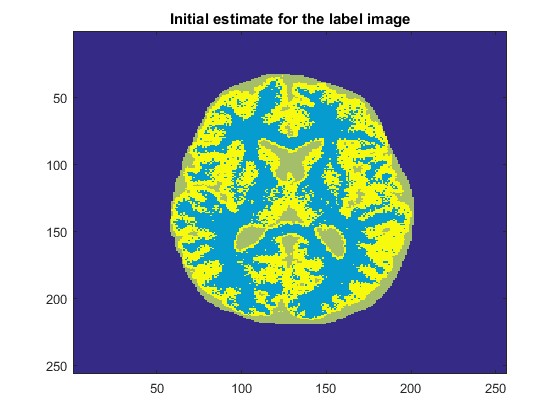
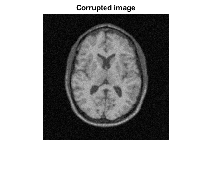
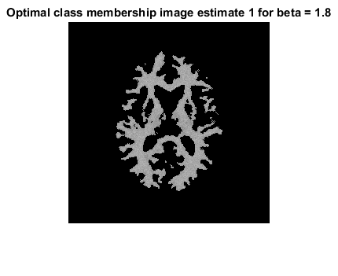
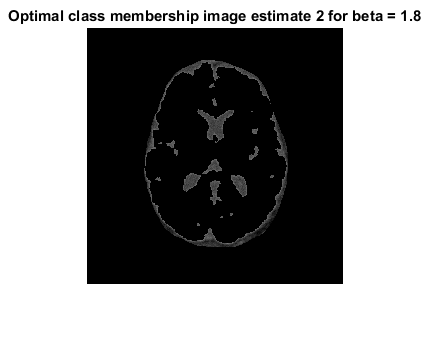
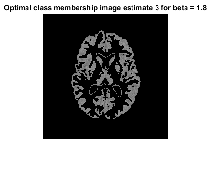
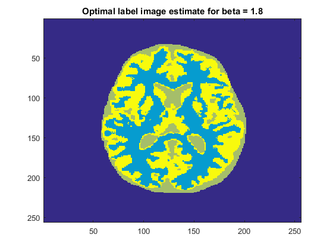
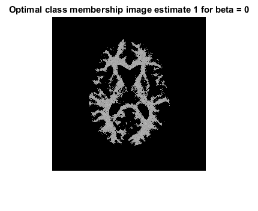
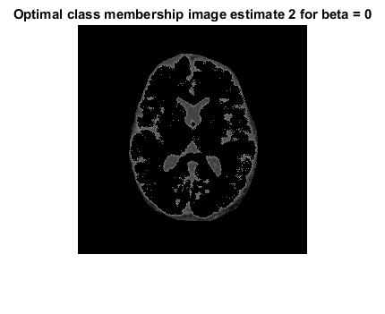
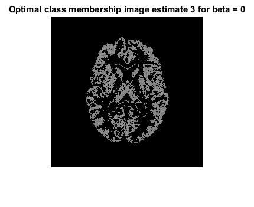
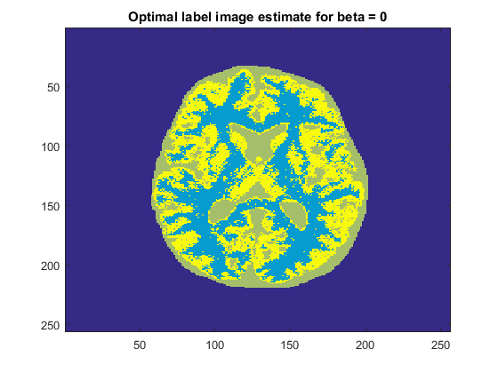

Contents
Initialize and load
clc;
clear;
close all;
load('../data/assignmentSegmentBrainGmmEmMrf.mat');
K = 3;
Part a) Initialize MRF params
validMapLeft = circshift(imageMask,1,2);
validMapRight = circshift(imageMask,-1,2);
validMapTop = circshift(imageMask,1,1);
validMapBottom = circshift(imageMask,-1,1);
beta1 = 1.8;
beta2 = 0;
priorFunction1 = @(candidate_label,current_labels) EvaluateLabelPriors(...
candidate_label,current_labels,beta1,validMapLeft,validMapRight,...
validMapTop,validMapBottom,imageMask);
priorFunction2 = @(candidate_label,current_labels) EvaluateLabelPriors(...
candidate_label,current_labels,beta2,validMapLeft,validMapRight,...
validMapTop,validMapBottom,imageMask);
Part b) Label initialization
validImage = imageData(logical(imageMask));
[idx,C] = kmeans(validImage,K);
labelMap = zeros(size(imageData));
labelMap(logical(imageMask)) = idx;
Part c) Gaussian params initialization
means_init = C;
sigmas_init = zeros(K,1);
for i=1:K
clusterVals = validImage(idx==i);
sigmas_init(i) = sqrt(sumsqr(clusterVals - means_init(i))/length(clusterVals));
end
Part d) Perform Segmentation
xInit = labelMap;
fprintf('*** Starting modified ICM with beta = %f ***\n',beta1);
[x1,means1,sigmas1,iters1] = PerformSegmentation(xInit,imageData,means_init,...
sigmas_init,20,imageMask,priorFunction1);
fprintf('\n*** Starting modified ICM with beta = %f ***\n',beta2);
[x2,means2,sigmas2,iters2] = PerformSegmentation(xInit,imageData,means_init,...
sigmas_init,20,imageMask,priorFunction2);
*** Starting modified ICM with beta = 1.800000 ***
Iter 1: log posterior before = 7985.192814
Iter 1: log posterior after = 16614.979157
Iter 2: log posterior before = 16786.933949
Iter 2: log posterior after = 16879.496849
Iter 3: log posterior before = 16934.815014
Iter 3: log posterior after = 17911.423183
Iter 4: log posterior before = 17914.673729
Iter 4: log posterior after = 17571.937122
*** Starting modified ICM with beta = 0.000000 ***
Iter 1: log posterior before = 35921.192814
Iter 1: log posterior after = 36322.288697
Iter 2: log posterior before = 36411.021685
Iter 2: log posterior after = 36564.253976
Iter 3: log posterior before = 36515.287827
Iter 3: log posterior after = 36606.429761
Iter 4: log posterior before = 36539.439085
Iter 4: log posterior after = 36592.597960
Iter 5: log posterior before = 36501.419977
Iter 5: log posterior after = 36533.807226
Iter 6: log posterior before = 36434.349228
Iter 6: log posterior after = 36457.089417
Iter 7: log posterior before = 36361.191514
Iter 7: log posterior after = 36372.596242
Iter 8: log posterior before = 36287.889255
Iter 8: log posterior after = 36294.499443
Iter 9: log posterior before = 36228.836923
Iter 9: log posterior after = 36232.127004
Iter 10: log posterior before = 36184.463677
Iter 10: log posterior after = 36185.971672
Iter 11: log posterior before = 36153.471569
Iter 11: log posterior after = 36154.499602
Iter 12: log posterior before = 36133.638934
Iter 12: log posterior after = 36134.283072
Iter 13: log posterior before = 36121.326358
Iter 13: log posterior after = 36121.701280
Iter 14: log posterior before = 36113.873964
Iter 14: log posterior after = 36114.169373
Iter 15: log posterior before = 36109.609143
Iter 15: log posterior after = 36109.731719
Iter 16: log posterior before = 36107.036737
Iter 16: log posterior after = 36107.111804
Iter 17: log posterior before = 36105.543201
Iter 17: log posterior after = 36105.595289
Iter 18: log posterior before = 36104.675770
Iter 18: log posterior after = 36104.692204
Iter 19: log posterior before = 36104.143314
Iter 19: log posterior after = 36104.167526
Iter 20: log posterior before = 36103.848409
Iter 20: log posterior after = 36103.850577
Viewing results
set11 = zeros(size(imageData));
set21 = zeros(size(imageData));
set31 = zeros(size(imageData));
set12 = zeros(size(imageData));
set22 = zeros(size(imageData));
set32 = zeros(size(imageData));
set11(x1==1) = imageData(x1==1);
set21(x1==2) = imageData(x1==2);
set31(x1==3) = imageData(x1==3);
set12(x2==1) = imageData(x2==1);
set22(x2==2) = imageData(x2==2);
set32(x2==3) = imageData(x2==3);
Show images and report optimal estimates
figure()
imagesc(xInit)
title('Initial estimate for the label image')
figure()
imshow(imageData);
title('Corrupted image')
figure()
imshow(set11);
title('Optimal class membership image estimate 1 for beta = 1.8')
figure()
imshow(set21);
title('Optimal class membership image estimate 2 for beta = 1.8')
figure();
imshow(set31);
title('Optimal class membership image estimate 3 for beta = 1.8')
figure()
imagesc(x1)
title('Optimal label image estimate for beta = 1.8')
figure()
imshow(set12);
title('Optimal class membership image estimate 1 for beta = 0')
figure()
imshow(set22);
title('Optimal class membership image estimate 2 for beta = 0')
figure();
imshow(set32);
title('Optimal class membership image estimate 3 for beta = 0')
figure()
imagesc(x2)
title('Optimal label image estimate for beta = 0')
fprintf('\nChosen value of beta = %f',beta1);
fprintf('\nThe optimal estimates for the class means are [%f %f %f] for beta = 1.8\n',means1(1),means1(2),means1(3));
Chosen value of beta = 1.800000
The optimal estimates for the class means are [0.628774 0.281810 0.513729] for beta = 1.8
         